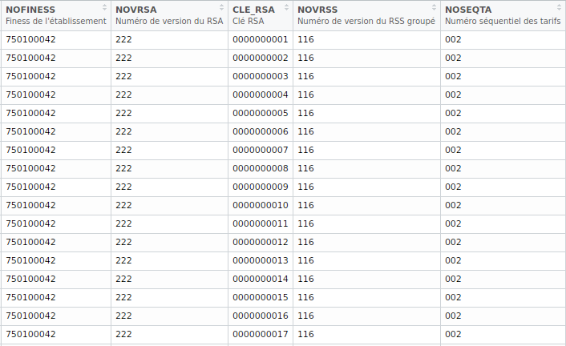
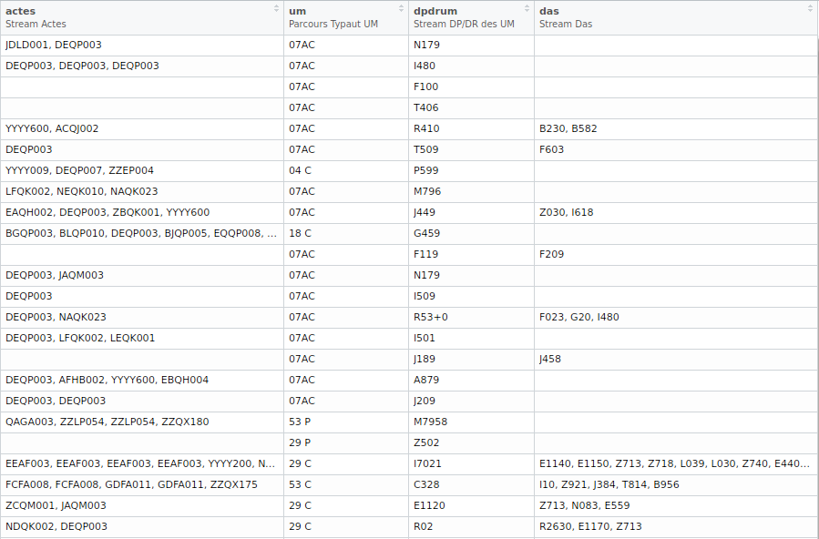

4 Import des données
4.1 MCO
| Nom | Fonction |
|---|---|
| irsa | ~ MCO - Import des RSA |
| irum | ~ MCO - Import des RUM |
| idiap | ~ MCO - Import des DIAP |
| idmi_mco | ~ MCO - Import des DMI |
| iium | ~ MCO - Import des donnees UM |
| ileg_mco | ~ MCO - Import des erreurs Leg |
| imed_mco | ~ MCO - Import des Med |
| ipo | ~ MCO - Import des PO |
| iano_mco | ~ MCO - Import des Anohosp |
Les données in / out sont prises en charge.
4.1.1 RSA
Selon la nature des analyses à produire, plusieurs types d’imports sont possibles :
| Type | Import |
|---|---|
| 1 | Light : Partie fixe |
| 2 | Light+ : Partie fixe + stream en ligne (+) actes et das |
| 3 | Light++ : Partie fixe + stream en ligne (++) actes, das, typaut um et dpdr des um |
| 4 | Standard : Partie fixe + creation des tables actes, das et rsa_um |
| 5 | Standard+ : Partie fixe + creation des tables actes, das et rsa_um + stream (+) |
| 6 | Standard++ : Partie fixe + creation des tables actes, das et rsa_um + stream (++) |
library(pmeasyr)
# Import des rsa 2015 type 6
irsa(finess = 750100042,
annee = 2015,
mois = 12,
path = '~/Documents/data/mco',
typi = 6) -> rsa15
View(rsa15$rsa)
View(rsa15$rsa_um)
View(rsa15$actes)
View(rsa15$das)Les tables sont par défaut avec des libellés :

Capture d’une portion de la table rsa15$rsa
4.1.2 RUM
# Import des rum 2015
irum(finess = 750100042,
annee = 2015,
mois = 12,
path = '~/Documents/data/mco')Selon la nature des analyses à produire, plusieurs types d’imports sont possibles :
| Type | Import |
|---|---|
| 1 | XLight : Partie fixe |
| 2 | Light : Partie fixe + stream en ligne des actes, das et dad |
| 3 | Standard : Partie fixe + table actes, das, dad |
| 4 | Standard+ : Partie fixe + stream + table actes, das, dad |
4.1.3 Colonnes stream
Exemples sur quelques rsa :
- actes : Actes CCAM du Rsa
| Cle RSA | actes |
|---|---|
| 0000000001 | EDSF004, EDSF004, JQGA004, JQGA004 |
| 0000000002 | EPLF002, DEQP003, DEQP007, DZQM006 |
| 0000000003 | EBQH002, EEQH002, YYYY180 |
- dpdrum : zones diagnostics des passages UM du Rsa
| Cle RSA | dpdrum |
|---|---|
| 0000000004 | Z098 I671 |
| 0000000005 | Z380, P741, Z380 |
- das : zones diagnostics associes du Rsa
| Cle RSA | das |
|---|---|
| 0000000006 | Z9580, Z9588 |
| 0000000007 | P011, P032, P036, P011, P032, P700, P011, P032, P036 |
- um : types autorisations T2A des um de passage par ordre chronologique
| Cle RSA | um |
|---|---|
| 0000000009 | 01AC, 53 C |
| 0000000010 | 51 C |
| 0000000011 | 71 C, 04 C, 71 C |

Capture des zones stream de la table rsa15$rsa
Pour les quatre autres champs PMSI, seules les données du out sont prises en charge par le package pour le moment.
Les fonctions d’imports pour ces champs PMSI reposent sur le même principe qu’en MCO.
4.2 HAD
| Nom | Fonction |
|---|---|
| iano_had | ~ HAD - Import des Anohosp |
| imed_had | ~ HAD - Import des Med |
| irapss | ~ HAD - Import des RAPSS |
| ileg_had | ~ HAD - Import des erreurs LEG |
library(pmeasyr)
# Import des rapss 2015
irapss(finess = 750712184,
annee = 2015,
mois = 12,
path = '~/Documents/data/had') -> data_had4.3 SSR
| Nom | Fonction |
|---|---|
| iano_ssr | ~ SSR - Import des Anohosp |
| irha | ~ SSR - Import des RHA |
| issrha | ~ SSR - Import des SSRHA |
| imed_ssr | ~ SSR - Import des MED |
| iium_ssr | ~ SSR - Import des UM |
| ileg_ssr | ~ SSR - Import des erreurs LEG |
# Import des rha 2015
irha(finess = 750041543,
annee = 2015,
mois = 12,
path = '~/Documents/data/ssr') -> data_ssr4.4 PSY
| Nom | Fonction |
|---|---|
| iano_psy | ~ PSY - Import des Anohosp |
| ir3a | ~ PSY - Import des R3A |
| irpsa | ~ PSY - Import des RPSA |
# Import des rpsa 2015
irpsa(finess = 750803454,
annee = 2015,
mois = 12,
path = '~/Documents/data/psy') -> rpsa_psy
# Import des r3a 2015
ir3a(finess = 750803454,
annee = 2015,
mois = 12,
path = '~/Documents/data/psy') -> r3a_psy4.5 RSF
| Nom | Fonction |
|---|---|
| irafael | ~ RSF - Import des RSFA / Rafael |
| iano_rafael | ~ RSF - Import des RSFA / ANO |
# Import des rsfa 2015
irafael(finess = 750712184,
annee = 2015,
mois = 12,
path = '~/Documents/data/rsf') -> rsfa4.6 Dictionnaire de variables
# Obtenir les noms, labels et types de variables (character, numeric, integer, date, ...)
dico(rsa15$rsa)# Charger les formats de toutes les tables prises en charge par le package
pmeasyr::formats4.7 Labels
# Obtenir le libelle d'une variable du PMSI
labeleasier(rsa15$rsa$SEXE, Sexe = T)
labeleasier(rsa15$rsa$ECHPMSI, Mode_entree = T)